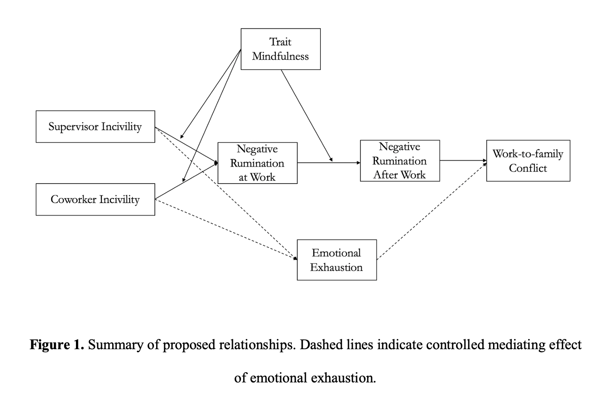
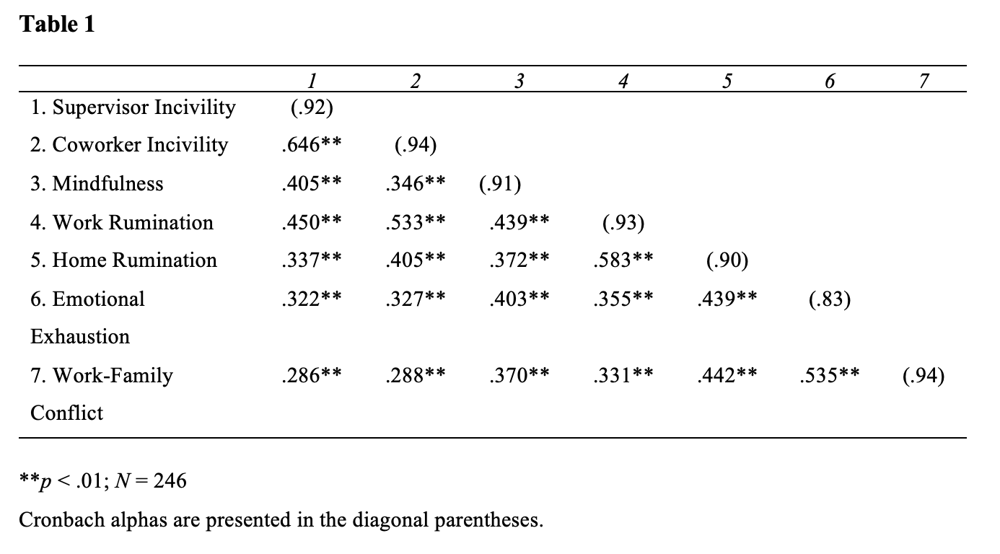
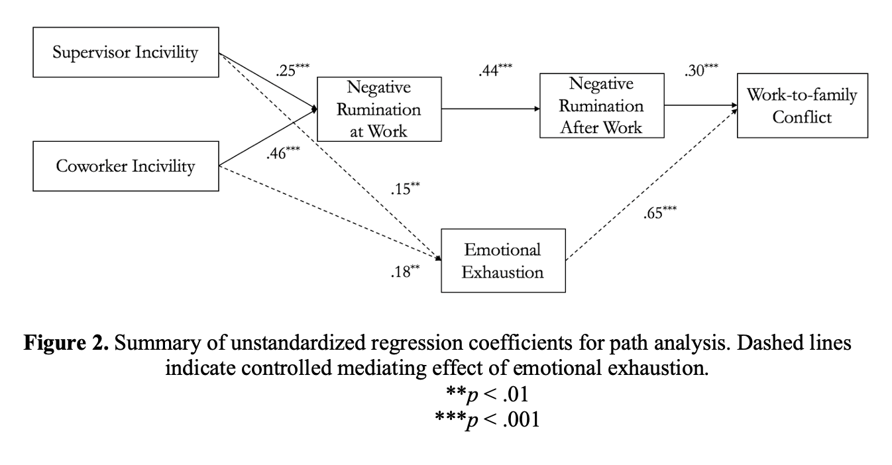
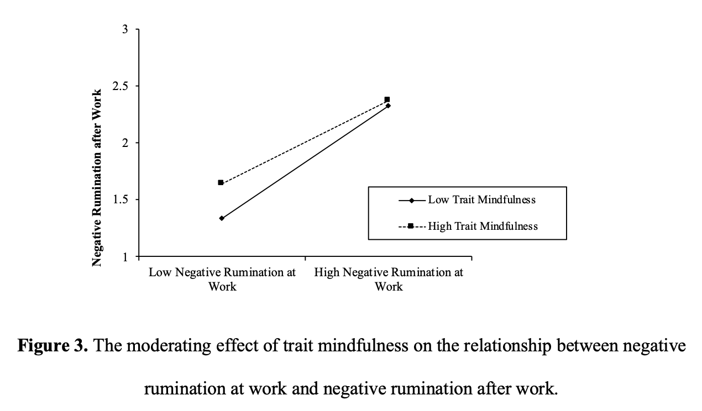

While the relationship between workplace incivility and work-to-family conflict has been established by a few studies, the underlying mechanisms remain understudied. The current study adopted a cognitive approach by examining negative rumination at work and after work as mediators of the relationship between workplace incivility and work-to-family conflict and by testing the buffering effect of trait mindfulness. Our findings suggest those who experience more incivility at work from supervisors and coworkers are more likely to ruminate these negative events at work and after work, and thus experience more work-to-family conflict; further, trait mindfulness can potentially reduce the spillover process of negative rumination from at work to after work. This study was presented at the SIOP 2020 conference.
Workplace incivility is a prevalent issue in the workplace (Porath & Pearson, 2013), and research over the past 15 years has shown that it can affect various employee health-related, work-related, and nonwork domain outcomes (Cortina, Kabat-Farr, Magley, & Nelson, 2017). Among the nonwork domain outcomes, work-to-family conflict has been relatively less studied despite its important implications for employees and organizations alike (Amstad, Meier, Fasel, Elfering, & Semmer, 2011). While a recent study (Zhou, Meier, & Spector, 2019) established that emotional exhaustion mediated the relationship between workplace incivility and work-to-family conflict, the present study aims to expand the research on this relationship by examining additional underlying mechanisms.
This work contributes to the incivility literature in two ways. First, we examine negative ruminations at work and after work in addition to emotional exhaustion as mediators between workplace incivility and work-to-family conflict. Based on a resource-based perspective, Zhou et al. (2019) established emotional exhaustion as a mediator in this relationship. Building on their work and controlling for emotional exhaustion, the current study attempts to understand how incivility might be linked to work-to-family conflict through a cognitive perspective. Exploring negative rumination as a mediator will help us better understand other mediating mechanisms and their influence on the outcomes of incivility.
Second, we investigate the moderating role of trait mindfulness. Mindfulness, although understudied, in the workplace has been linked to positive outcomes for employees’ wellbeing (Roche, Haar, & Luthans, 2014). According to the limited research, mindfulness does have the ability to buffer the negative affects employees may experience when they encounter negative experiences at work (e.g., Long and Christian, 2015). Employees with higher levels of trait mindfulness focus on the present and disengage themselves from negative experiences (Shapiro, Carslon, Aston, & Freedman, 2006). We predict that trait mindfulness will buffer the effects of workplace incivility on negative rumination and the effect of negative rumination at work on after work. Examining trait mindfulness can help us understand potential boundary conditions of how workplace incivility effects unfold to the nonwork domain.
Workplace incivility is defined as “low-intensity deviant behavior with ambiguous intent to harm the target, in violation of workplace norms for mutual respect” (Andersson & Pearson, 1999, p. 457). Porath and Pearson (2013) reported that research from the past 14 years, 98% of participants reported being victims of workplace incivility, which demonstrates that it is a pervasive issue. In the current study, we focused on workplace incivility from coworkers and supervisors. Coworker incivility occurs when the target experiences the set of low-intensity deviant behaviors that are carried out by one’s coworkers (Sliter, Sliter, & Jex, 2012). Supervisor incivility refers to employees experiencing low-deviant behaviors from their supervisors. Individuals in higher supervisory roles have been found to be responsible for about 60% of all reported workplace incivility incidents cases (Pearson & Porath, 2009).
Work-to-family conflict is defined as the incompatibility between the demands of work and family (Amstad et al., 2011). Job demands can deplete the resources that can be dedicated to family. It is important to understand work-to-family conflict due to its prevalence and negative impact on employee wellbeing (Geurts, Kompier, Roxburgh, & Houtman, 2003). Michel, Kotrba, Deuling, and Clark’s (2011) meta-analysis indicated that common antecedents of work-family conflict include work role stressors, work role involvement, work social support, work characteristics, and personality.
Workplace incivility has been linked to work-to-family conflict in previous research (Lim & Lee, 2011), suggesting that targets of workplace incivility are more likely to experience work-to-family conflict. Research has additionally established that emotional exhaustion, an indicator of depletion of resources, can serve as a mediator in this relationship (Zhou et al., 2019). The current study hopes to strengthen our understanding by exploring negative rumination at work and after work as mediators.
Rumination can be defined as having repetitive thoughts by a certain occurrence (Martin & Tesser, 1996). Negative rumination at work can be viewed as the inability to detach from work-related thoughts stemming from a negative experience (Cropley, Michalianou, Pravettoni, & Millward, 2012). It reflects an individual’s inability to “cognitively switch off” about work related issues after work (Cropley & Purvis, 2003). Victims of workplace incivility are likely to be left wondering what their place is in their organization, leading to a long period of reflection afterward (Pearson, Andersson, and Porath, 2000). Targets are more likely to ruminate about this negative experience at work. Shapiro (2013) discovered that workplace incivility positively predicted stress-reactive rumination and Demsky, Fritz, Hammer, and Black (2019) also found that experiencing workplace incivility was linked with increased negative work rumination. Based on these findings, we propose the following:
Tremmel and Sonnentag (2018) found that the effects of workplace incivility might spill over their nonwork domain, such that incivility positively predicted negative affect after, at bedtime, and the next morning. We believe workplace incivility might also have similar effects on negative ruminations. Negative rumination is intrusive and tends to lead to decreased motivation and depression (Lyubomirsky & Tkach, 2003). Demsky, Ellis, and Fritz (2014) found that targets of workplace incivility are less likely to disengage from work in nonwork hours. They are likely to continue the repeated negative thoughts after work, and have a difficult time “letting go.” Thus, we propose the following hypothesis:
Haggard, Robert, and Rose (2011) discovered that rumination at work and discussing negative workplace events was linked to work-family conflict. We believe this same effect can be observed between negative rumination after work and work-to-family conflict. When employees continue to have repeated negative thoughts about work-related events after work, their energy is consumed, interfering with family involvement. Edwards and Rothbard (2000) found that when employees leave work in a negative affective state, their social interactions at home are impaired. Negative rumination also has been found to have an impact on sleeping patterns and a positive relationship with insomnia (Demsky et al., 2019). Given that sleep quality is critical for better work-life balance (Allen & Kiburz, 2011), it is likely that insomnia caused by rumination can result in work-family conflict. Controlling for the mediating role of emotional exhaustion between workplace incivility and work-family conflict (Zhou et al., 2019), we propose the following:
Glomb, Duffy, Bono, and Yang (2011) defined trait mindfulness as the dispositional individual differences of being attentive and aware of the present. Brown and Ryan (2003) found that individuals with higher levels of trait mindfulness are more likely to regulate their actions and reactions in a way that will help them fulfill their need for control. Those with high levels of trait mindfulness may be able to accept upsetting events without having strong emotional reactions to it in order to maintain and regulate their environment.
We suggest that trait mindfulness will have a buffering effect on the relationship between workplace incivility and negative rumination at work. Individuals with higher levels of trait mindfulness tend to respond to stress experiences, such as incidents of workplace incivility, in an accepting way and let these negative experiences pass without reaction (Ciesla, Reilly, Dickson, Emanuel, & Updegraff, 2012). Literature has established that mindful individuals are less likely to ruminate and are able to detach (Borders, Earleywine, & Jajodia, 2010). Roche et al. (2014) also discovered that mindful individuals are less likely to personalize events, in that they are likely to be able to remove themselves from negative events mentally. The same rationale can be applied to the relationship between workplace incivility and negative rumination at work, such that trait mindfulness is likely to mitigate this relationship.
Research on mindfulness also suggests that those with higher trait mindfulness are more likely to create boundaries between work and family life (Tarraf, 2017). Michel, Bosch, and Rexroth (2014) and Allen and Kiburz (2011) found that individuals that have an ability to detach from work-related thoughts have a better work-life balance. Thus, it is likely that those with high trait mindfulness pay more attention to maintaining the boundary between work and nonwork life. Thus, trait mindfulness can potentially buffer the spillover of negative rumination from work to after work. Thus, we hypothesize the following:
Figure 1 summarizes the proposed relationships.

We recruited our participants using Qualtrics Panel Services, a third-party online survey administration platform. We collected two waves of data with one month in between to reduce common method variance (Podsakoff, Mackenzie, Lee, & Podsakoff, 2003). At Time 1, Qualtrics distributed our surveys to full-time employees in North America who were at least 18 years old, at their current job for 6 months or more, and worked at least 35 hours per week. A total of 481 participants took the initial survey. One month later, a second survey was only sent to those who participated in the initial survey, and 246 of them responded (response rate = 51%). We conducted our analyses with data from those who had both with both Time 1 and Time 2 data. In this final sample of 246 participants, 51% were female and 47.6% were white, working in a variety of industries (e.g., 12% from service industry, 11% from education industry, 7% from manufacturing, and 7% from finance).
Unless otherwise specified, all measures were using a 5-point Likert scale with response options ranging from 1 (Strongly Disagree) to 5 (Strongly Agree).
Workplace Incivility. We measured workplace incivility from supervisor and coworker with 7 items each from Cortina et al. (2001) at Time 1. An example item was “My supervisor (coworker) put me down or was condescending to me.” with response options from 1 (Never) to 5 (Always).
Negative Rumination at Work. We measured negative rumination at work with 4 items from Frone (2015) at Time 1. An example item was “how often do you replay negative work events in your mind while at work” with response options from 1 (Never) to 4 (Often).
Trait Mindfulness. We measured trait mindfulness at Time 1 with 15 items from Brown and Ryan (2003). A sample item is “I could be experiencing some emotion and not be conscious of it until sometime later” with response options from 1 (Almost never) to 7 (Almost always).
Negative Rumination after Work. We measured negative rumination after work with 4 items adapted from Frone (2015) at Time 2. An example item was “how often do you replay negative work events in your mind when you are away from work” with response options from 1 (Never) to 4 (Often).
Emotional Exhaustion. We measured emotional exhaustion with 8 items from Demerouti, Mostert, and Bakker (2010). An example item was “There are days when I feel tired before I arrive at work.” with response options from 1 (Strongly Disagree) to 4 (Strongly Agree). with 4 items adapted from Frone (2015) at Time 2. An example item was “how often do you replay negative work events in your mind when you are away from work” with response options from 1 (Never) to 4 (Often).
Work-family Conflict. We measured work-family conflict with 5 items from Netemeyer, Boles, and McMurrian (1996). An example item was “The demands of my work interfere with my home and family life”.
Demographics. Demographic information was collected at Time 1, including gender, age, tenure, and hours worked per week.
Table 1 shows means, standard deviations, and correlations among studied variables. To test Hypotheses 1 to 3, we ran a path analysis model and Figure 2 shows unstandardized regression coefficients for all paths. We also estimated the indirect effects for all mediation hypotheses. As shown in Figure 2, both supervisor incivility (b= .25, p < .001) and coworker incivility (b= .46, p < .001) positively predicted negative rumination at work, supporting Hypothesis 1a and 1b. Negative rumination at work positively predicted negative rumination after work (b= .44, p < .001); the indirect effect of supervisor incivility on negative rumination after work was .11 with 95% bootstrapped CI [.06, .17], and the indirect effect of coworker incivility on negative rumination after work was .20 with 95% bootstrapped CI [.12, .29]. Thus, Hypotheses 2a and 2b were supported.

Negative rumination after work positively predicted work-to-family conflict (b= .30, p < .001). Further, the indirect effect of supervisor incivility on negative rumination work-to-family conflict through negative ruminations at work and after work was ..03 with 95% bootstrapped CI [.01, .07], and the indirect effect of coworker incivility was .06 with 95% bootstrapped CI [.02, .12]. Thus, Hypotheses 3a and 4b were supported. To tested hypothesis 4 and 5, we added trait mindfulness as a moderator in model 1. The interaction between supervisor incivility and trait mindfulness in predicting negative rumination at work was not significant, b= -.07, p = .33, and the interaction between coworker incivility and trait mindfulness in predicting negative rumination at work was also not significant, b= -.04, p = .65. Thus, Hypotheses 4a and 4b were not supported.

The interaction between negative rumination at work and trait mindfulness in predicting negative rumination after work was significant, b = -.11, p < .05. Figure 3 shows the plot of this interaction, suggesting that the positive relationship between negative rumination at work and negative rumination after work was weaker for those with higher trait mindfulness. Thus, Hypothesis 5 was supported.

The present study finds that negative rumination at work and after work mediate the effect of workplace incivility on work-to-family conflict, while trait mindfulness buffers the relationship of negative rumination at work on negative rumination after work. These findings contribute to the literature in two main ways.
First, building on the resource-based approach of Zhou et al. (2019) and controlling for the mediating role of emotional exhaustion, we demonstrates that workplace incivility can also potentially lead to work-to-family conflict through a cognitive process. That is, when employees are targets of workplace incivility at work, they are not only more likely to ruminate about these events at work, but also have similar thoughts even after they leave work. These repeated negative thoughts can potentially interfere with their ability to fulfill family demands, thus creating more work-to-family conflict. This finding is also consistent with previous finding that negative rumination mediates the relationship between abusive supervision and work-family conflict (Haggard et al., 2011).
Second, we for the first time bring trait mindfulness in the spillover process of workplace incivility and found that trait mindfulness moderate the relationship between negative rumination at work and after work, suggesting that trait mindfulness can be a beneficial factor to help employees avoid the spillover of negative thoughts from work to after work. This is consistent with findings that those with higher trait mindfulness tend to have higher level of work-life balance (Allen and Kiburz, 2011). However, we did not find support for the buffering role of trait mindfulness on the effect of workplace incivility and negative rumination at work, which is not consistent with previous findings that trait mindfulness buffers the effects of negative events. This is likely due to the ambiguous nature of workplace incivility, which makes it harder for people not to think about whether the perpetrators are intentional or how they should cope with it.
On the practice side, our findings suggest it might be beneficial for organizations to introduce mindfulness training in the organization, as evidenced in Long and Christian (2015). Even if targets of workplace incivility are likely to engage in rumination at work, a mindfulness training program can help employees practice good ways to relax and recover, create boundaries between their work life and family life, and experience less work-to-family conflict.
Although we used a time-lagged design, this study used self-report measures and the potential for common method bias exists (Podaskoff, Mackenzie, Lee, & Podaskoff, 2003). Second, the sample used in this study is predominantly white and female, which might bias the results since females and people of color report experiencing more workplace incivility (Cortina, Magley, Williams, & Langhout, 2001). Third, there may be other potential moderators and mediators that influence this relationship, including the type of industry and organization, the position that the employees hold, and more.
Allen, Tammy & M Kiburz, Kaitlin. (2011). Trait mindfulness and work–family balance among working parents: The mediating effects of vitality and sleep quality. Journal of Vocational Behavior. 80. 10.1016/j.jvb.2011.09.002.
Amstad, F. T., Meier, L. L., Fasel, U., Elfering, A., & Semmer, N. K. (2011). A meta‐analysis of work–family conflict and various outcomes with a special emphasis on cross‐domain versus matching‐domain relations. Journal of Occupational Health Psychology, 16, 151–169. https://doi. org/10.1037/a0022170
Andersson, L. M., & Pearson, C. M. (1999). Tit for tat? The spiraling effect of incivility in the workplace. Academy of Management Review, 24, 452-471. doi: 10.5465/AMR.1999.2202131
Borders, A., Earleywine, M., Jajodia, A. (2010). Could mindfulness decrease anger, hostility, and aggression by decreasing rumination? Aggressive Behaviour, 36, 28-44. doi: 10.1002/ab.20327
Brown, K. W., & Ryan, R. M. (2003). The benefits of being present: mindfulness and its role in psychological well-being. Journal of Personality and Social Psychology, 84, 822-848. doi: 10.1037/0022-3514.84.4.822
Ciesla, J. A., Reilly, L. C., Dickson, K. S., Emanuel, A. S., & Updegraff, J. A. (2012). Dispositional mindfulness moderates the effects of stress among adolescents: Rumination as a mediator. Journal of Clinical Child & Adolescent Psychology, 41, 760-770. doi: 10.1080/15374416.2012.698724 1037/0022-3514.84.4.822
Cortina, L. M., Magley, V. J., Williams, J. H., & Langhout, R. D. (2001). Incivility in the workplace: Incidence and impact. Journal of Occupational Health Psychology, 6, 64-80. http://dx.doi.org/10.1037/1076-8998.6.1.64
Cortina, L. M., Kabat-Farr, D., Magley, V. J., & Nelson, K. (2017). Researching rudeness: The past, present, and future of the science of incivility. Journal of Occupational Health Psychology, 22, 299-313. http://dx.doi.org/10.1037/ocp0000089
Cropley, Mark & Michalianou, Georgia & Pravettoni, Gabriella & J Millward, Lynne. (2012). The Relation of Post-work Ruminative Thinking with Eating Behaviour. Stress and health : journal of the International Society for the Investigation of Stress, 28, 23-30. 10.1002/smi.1397.
Cropley, M., & Purvis, L. J. M. (2003). Job strain and rumination about work issues during leisure time: A diary study. European Journal of Work and Organizational Psychology, 12, 195-207. http://dx.doi.org/10.1080/13594320344000093
Demerouti, E., Mostert, K., & Bakker, A. B. (2010). Burnout and work engagement: a thorough investigation of the independency of both constructs. Journal of occupational health psychology, 15, 209.
Demsky, C. A., Ellis, A. M., & Fritz, C. (2014). Shrugging it off: Does psychological detachment from work mediate the relationship between workplace aggression and work-family conflict? Journal of Occupational Health Psychology, 19, 195–205. http://dx.doi.org/10.1037/ a0035448
Demsky, C., Fritz, C., Hammer, L., & Black, A. (2019). Workplace Incivility and Employee Sleep: The Role of Rumination and Recovery Experiences. Journal of Occupational Health Psychology, 24, 228-240.
Edwards, J. R., & Rothbard, N. P. (2000). Mechanisms linking work and family: Clarifying the relationship between work and family constructs. The Academy of Management Review, 25, 178 –199. doi:10.2307/ 259269
Frone, M. R. (2015). Relations of negative and positive work experiences to employee alcohol use: Testing the intervening role of negative and positive work rumination. Journal of Occupational Health Psychology, 20, 148.
Geurts, S. A. E., Kompier, M. A. J., Roxburgh, S., & Houtman, I. L. D. (2003). Does Work-Home Interference Mediate the Relationship between Workload and Well-Being? Journal of Vocational Behavior, 63, 532-559. http://dx.doi.org/10.1016/S0001-8791(02)00025-8
Glomb, T. M., Duffy, M. K., Bono, J. E., & Yang, T. (2011). Mindfulness at work. In A. Joshi, H. Liao, & J. J. Martocchio (Eds.), Research in personnel and human resources management, 30, 115-157. doi: 10.1108/S0742-7301
Haggard, D., Robert, C., & Rose, A. (2011). Co-Rumination in the Workplace: Adjustment Trade-offs for Men and Women Who Engage in Excessive Discussions of Workplace Problems. Journal of Business and Psychology, 26, 27-40. Retrieved from http://www.jstor.org/stable/41474850
Lim, Sandy & Lee, Alexia. (2011). Work and Nonwork Outcomes of Workplace Incivility: Does Family Support Help?. Journal of occupational health psychology. 16. 95-111. 10.1037/a0021726.
Long, E. C., & Christian, M. S. (2015). Mindfulness buffers retaliatory responses to injustice: A regulatory approach. Journal of Applied Psychology. Advance online publication. doi: 10/1037/apl0000019
Lyubomirsky, Sonja & Tkach, C. (2004). The consequences of dysphoric rumination. Rumination: Nature, theory, and treatment of negative thinking in depression. 21-41.
Martin, L. L., & Tesser, A. (1996). Some ruminative thoughts. In R. S. Wyer, Jr. (Ed.), Advances in social cognition, Vol. 9. Ruminative thoughts (pp. 1-47). Hillsdale, NJ, US: Lawrence Erlbaum Associates, Inc.
Michel, Jesse & Kotrba, Lindsey & Deuling, Jacqueline & Clark, Malissa & Baltes, Boris. (2011). Antecedents of work–family conflict: A meta‐analytic review. Journal of Organizational Behavior. 32. 689 - 725. 10.1002/job.695.
Michel, A., Bosch, C., & Rexroth, M. (2014). Mindfulness as a cognitive-emotional segmentation strategy: An intervention promoting work-life balance. Journal of Occupational and Organizational Psychology, 87, 733-754. doi: 10.11111/joop/12072
Netemeyer, R. G., Boles, J. S., & McMurrian, R. (1996). Development and validation of work–family conflict and family–work conflict scales. Journal of Applied Psychology, 81, 400.
Pearson, C. M., Andersson, L. M., & Porath, C. L. (2000). Assessing and attacking workplace incivility. Organizational Dynamics, 29, 123–137. http://dx.doi.org/10.1016/S0090-2616(00)00019-X
Pearson, C., & Porath, C. (2009). The Costs of Bad Behavior: How Incivility Is Damaging Your Business and What to Do about It. New York: Penguin Books Ltd.
Podsakoff, P. M., MacKenzie, S. B., Lee, J.-Y., & Podsakoff, N. P. (2003). Common method biases in behavioral research: A critical review of the literature and recommended remedies. Journal of Applied Psychology, 88, 879-903. http://dx.doi.org/10.1037/0021-9010.88.5.879
Porath, C., & Pearson, C. (2013). The price of incivility. Harvard Business Review.
Roche, M., Haar, J. M., & Luthans, F. (2014). The role of mindfulness and psychological capital on the well-being of leaders. Journal of Occupational Health Psychology, 19, 476-489. doi: 10.1037/a0037183
Shapiro, Shauna & Carlson, Linda & Astin, John & Freedman, Benedict. (2006). Mechanisms of mindfulness. Journal of clinical psychology. 62. 373-86. 10.1002/jclp.20237.
Shapiro, J. (2013). Workplace incivility at the daily level: The effects of rumination on performance and revenge motives. (Unpublished Master’s Thesis). Retrieved from http://digitalcommons.uconn.edu/gs_theses/504/
Shockley, K. M., Shen, W., DeNunzio, M. M., Arvan, M. L., & Knudsen, E. A. (2017). Disentangling the relationship between gender and work–family conflict: An integration of theoretical perspectives using meta-analytic methods. Journal of Applied Psychology, 102, 1601-1635. http://dx.doi.org/10.1037/apl0000246
Sliter, M., Sliter, K., & Jex, S. (2012). The employee as a punching bag: The effect of multiple sources of incivility on employee withdrawal behavior and sales performance. Journal of Organizational Behavior, 33, 121-139. http://dx.doi.org/10.1002/job.767
Tarraf, Rima C., “Understanding Workplace Incivility Experiences and the Moderating Role of Mindfulness” (2017). Electronic Thesis and Dissertation Repository. 4757. http://ir.lib.uwo.ca/etd/4757
Tremmel, Stephanie & Sonnentag, Sabine. (2017). A Sorrow Halved? A Daily Diary Study on Talking About Experienced Workplace Incivility and Next-Morning Negative Affect. Journal of Occupational Health Psychology. 23. 10.1037/ocp0000100. http://dx.doi.org/10.1002/(SICI)1099-1379(199911)20:6<865::AID-JOB980>3.0.CO;2-L
Zhou, ZE, Meier, LL, Spector, PE. The spillover effects of coworker, supervisor, and outsider workplace incivility on work‐to‐family conflict: A weekly diary design. J Organ Behav. 2019; 1– 13. https://doi.org/10.1002/job.2401